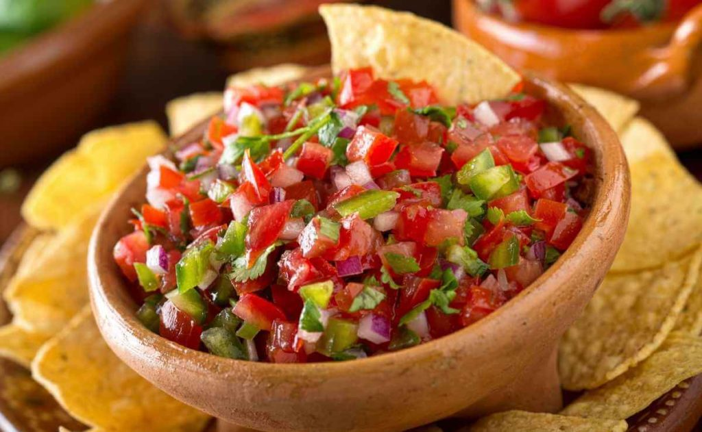

Chimol

A healthy, fresh and delicious salsa that utilizes the wonderful
radish
This is a honduran recipe that is traditionally served with carne asada,
but it also goes great with fish, tofu or chicken. It even is wonderful
as a dip for tortilla chips or veggies.
Ingredients
- 1 cup radish, chopped in medium fine diced
- 1 cup tomatoes, chopped in medium fine dice
- 1/2 cup cilantro, coarsely chopped
- 1/2 cup red onion, finely chopped
- 2 tablespoons fresh lemon juice
Instructions
- Combine all ingredients and enjoy!
Return to top
Return to main page